품질경영기사 (2011-03-20 기출문제)
1과목: 실험계획법
1. 동일한 물건을 생산하는 5대의 기계에서 부적합품 여부의 동일성에 관한 실험을 하였다. 적합품이면 0, 부적합품이면 1의 값을 주기로 하고, 5대의 기계에서 각각 200개씩의 제품을 만들어 부적합품 여부를 실험하여 다음과 같은 결과를 얻었다. 다음 분산분석표의 일부자료 를 이용하여 기계 간의 부적합품률에 서로 차이가 있는지에 관한 가설검정을 실시했을 때 다음 중 옳은 판정기준은?
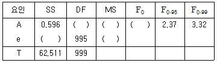
- F0＞F0.95이므로 5%의 위험률로 기계 간의 부적합품률의 차가 있다고 할 수 없다.
- F0＜F0.95이므로 5%의 위험률로 기계 간의 부적합품률의 차가 있다고 할 수 없다.
- F0＞F0.95이므로 5%의 위험률로 기계 간의 부적합품률의 차가 있다고 할 수 있다.
- F0＞F0.95이므로 1%의 위험률로 기계 간의 부적합품률의 차가 있다고 할 수 있다.
(정답률: 72%)

2. 반복이 없는 3인자 A,B,C의 3원배치법에서 변동 SAC를 바르게 표현한 것은? (단, A,B,C는 모두 모수인자이다.)
- SA+SC
- SA×C-SA-SC
- SA×C+SA-SC
- SA×C+SA+SC
(정답률: 46%)
3. 반복 있는 2원 배치의 실험에서 인자 A는 모수, 인자 B는 랜덤으로 3수준을 택한 인자이다. 분산분석 후의 추정에 관한 설명으로 가장 적절한 것은?
- E(bj)=bj이다.
- 인자 B의 모평균의 추정은 의미가 없다.
- 인자 B의 산포 σ2B의 추정은 의미가 없다.
- 인자 B에 대하여 b1+b2=-b3가 항상 성립한다.
(정답률: 69%)
4. x,y에 대한 상관분석하여 상관계수(r)가 0.8임을 도출하였다. 전체 변동에 대한 회귀변동의 기여율은 얼마인가?
- 0.04
- 0.20
- 0.64
- 0.89
(정답률: 75%)
5. 요인배치법에서 실험순서가 완전히 랜덤하게 정해지지 않고, 실험 전체를 몇 단계로 나누어서 단계별로 랜덤화하는 실험계획법으로, 예를 들어 1차 단위 인자 수준의 변경은 어렵지만 2차 단위 인자 수준의 변경은 쉬울 경우 사용되는 실험계획법은?
- 교락법
- 라틴방격법
- 분할법
- 일부실시법
(정답률: 75%)
6. 강력 접착제의 응집력을 높이기 위해서 4요인 A, B, C, D가 중요한 작용을 한다는 것을 알고 각각 2수준씩 선택하여 Ls(27)직교배열표를 이용, 다음과 같은 분산분석 결과를 얻었다. 분석결과 A의 F0값이 작고, 유의확률이 큰 값을 가짐으로 오차항에 풀링하기로 하였다. 풀링 후 오차항의 제곱합(Se) 과 자유도(νe)는 각각 얼마인가?
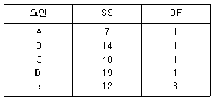
- Se=12, νe=3
- Se=12, νe=4
- Se=19, νe=3
- Se=19, νe=4
(정답률: 70%)
7. 지분실험법에 관한 설명으로 가장 거리가 먼 것은?
- 지분실험법의 오차항의 자유도는 (총데이터수)－(인자의 수준수의 합)에서 유도하여 만든다.
- 일반적으로 변량인자들에 대한 실험계획법으로 많이 사용되어 완전 랜덤 실험과는 거리가 멀다.
- 인자가 유의할 경우 모평균의 추정은 별로 의미가 없고, 산포의 정도를 추정하는 것이 효과적이다.
- 여러 가지 샘플링 및 측정의 정도를 추정하여 샘플링 방식을 설계할 때나 측정방법을 검토할 때도 사용이 가능하다.
(정답률: 65%)
8. 32형 요인배치 실험결과가 다음과 같을 때 인자 A의 변동 약SA는 얼마인가?
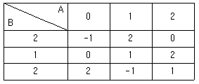
- 0.67
- 0.74
- 0.85
- 0.92
(정답률: 67%)
9. 다음 중 그레코라틴방격은 어느 것인가?
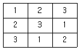
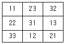
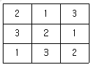
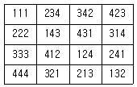
(정답률: 73%)
10. L9(34)실험횟수를 늘리지 않고 실험 전체를 몇 개의 블록으로 나누어 배치시켜 동일한 환경 내에서 적은 실험횟수로 실험의 정도를 향상시키기 위하여 고안한 실험계획법은?
- 교락법
- 라틴방격법
- 난괴법
- 요인배치법
(정답률: 69%)
11. 직교배열표를 이용하여 표와 같이 실험을 배치하였다. 다음 중 가장 부적절한 것은?
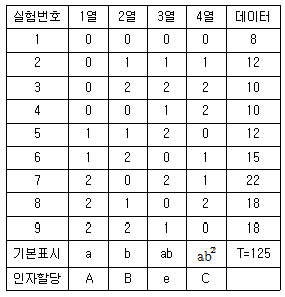
- 수정항(CT)은 약 1736.1이다.
- 총실험수는 9개이며 총변동(ST)은 약 170.1이다.
- 위의 할당으로 보아 교호작용은 별로 영향을 끼치지 않는다고 판단한 것이다.
- 실험번호 3의 실험조건은 A0B2C2수준으로 조건을 설정하여 실험하였다는 뜻이다.
(정답률: 67%)
12. yi은 i번째 처리 수준에서 측정값의 합을 나타낸다. 다음 중 대비(Contrast)가 아닌 것은?
- c=y1·+y3·-y4·-y5·
- c=3y1·+y2·-2y3·-2y4·
- c=4y1·-3y3·+y4·-y5·
- c=-y1·+4y2·-y3·-y4·-y5·
(정답률: 74%)
13. 반복있는 2원 배치에서 인자 A의 수준수는 4, 인자 B의 수준수는 3, 반복수는 2이다. 만약 A×B가 유의하지 못하여 오차항에 풀링되는 경우 분산분석표에서 오차항의 자유도는 얼마인가?
- 6
- 12
- 18
- 24
(정답률: 67%)
14. 다음은 반복이 다른 1원배치 실험 결과에 대한 분산분석표이다. F0의 ( )에 알맞은 값은 약 얼마인가?
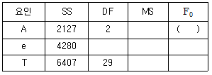
- 4.46
- 4.63
- 6.71
- 6.95
(정답률: 80%)
15. 수준수가 4, 반복 5회인 1원배치 실험의 분산분석 결과 인자 A가 유의수준 5%에서 유의적이었다. ST=2.478, SA=1.690이었고,
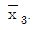
=8.50일 때, μ(A3)유의수준 0.⑤로 구간추정면 약 얼마인가? (단, t=0.975(16)=2.120, t0.95(16)=10,746이다.)·- 8.290≤μ(A3)≤8.710
- 8.265≤μ(A3)≤8.735
- 8.306≤μ(A3)≤8.694
- 8.327≤μ(A3)≤8.673
(정답률: 69%)
16. 모수인자 A는 3수준, 블록인자 B는 2수준으로 난괴법 실험을 실시하여 분석한 결과 다음의 데이터를 얻었다. 인자 A의 수준 A1과 수준 A3간의 모평균 차이의 양측 신뢰구간을 신뢰율 95%로 추정하면 약 얼마인가? (단, t=0.975(2)=4.303, t=0.975(5)=2.571이다.)
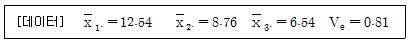
- 6±2.31
- 6±3.28
- 6±3.87
- 6±4.24
(정답률: 63%)
17. 모수인자 A, b, C의 수준수가 각각 4, 3, 3이고, 반복 2회의 3원배치 실험을 할 때 오차항의 자유도는 얼마인가?
- 12
- 24
- 36
- 41
(정답률: 77%)
18. 망목특성의 식을 나타낸 것으로 옳지 않은 것은? (단, s=√V, Sm=1/n(y1+y2+y3+ … +y4)2)
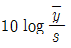
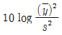
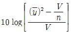
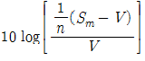
(정답률: 55%)
19. 다음 중 모수인자의 특성으로 볼 수 없는 것은? (단, ai는 인자 A의 주효과이다.)
- ai들의 합은 0이다.
- ai들의 평균은 0이다.
- ai들의 기대값은 0이다.
- ai들의 분산(Var(Ai))은 0이다.
(정답률: 57%)
20. 23형 계획에서 정의대비를 A×B×C로 잡아 1/2일부실시법으로 실험을 실시하는 경우 A와 별명관계에 있는 요인은?
- B
- A×B
- A×C
- B×C
(정답률: 70%)
2과목: 통계적품질관리
21. 계량 규준형 1회 샘플링 검사(KS Q 1001：20⑤)에서 로트의 평균치를 보증하는 경우에 상한 합격판정값(
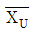
이 5.6, G0σ이라면, 가능한 한 합격시키고자 하는 로트의 평균값의 한계(m0)는 약 얼마인가?- 2.6
- 3.0
- 5.6
- 8.2
(정답률: 54%)
22. 하나의 로트에서 시료를 1번 취할 때 부적합품질이 0.1로 일정할 경우 20개의 표본 중 부적합품이 1개 이하일 확률을 구하는 식으로 옳은 것은?
- 20C1×0.11×0.919
- sub>20C1×0.91×0.119
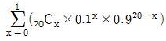
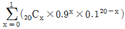
(정답률: 72%)
23. 그림과 같은 표본 정규분포에서 제2종 과오를 나타내는 영역은?(단, 한쪽 검정인 경우로 가 정한다.)
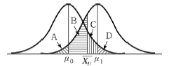
- A
- D
- A＋B
- C＋D
(정답률: 67%)
24. 계수값 샘플링 검사에서 일반적으로 로트의 크기와 샘플의 크기를 일정하게 하고, 합격판정 개수를 증가시킬 때 생산자 위험과 소비자 위험에 관한 설명으로 옳은 것은?
- 생산자 위험과 소비자 위험이 모두 감소한다.
- 생산자 위험과 소비자 위험이 모두 증가한다.
- 생산자 위험은 감소하고, 소비자 위험은 증가한다.
- 생산자 위험은 증가하고, 소비자 위험은 감소한다.
(정답률: 68%)
25. 10개의 배치(Batch)에서 각각 4개씩의 샘플을 뽑아 변동(R)을 구하였더니 Σ=16이었다. 이때
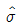
약 얼마인가? (단, 군의 크기가 4일 때 d2=2.⑤9, d3=0.880이다.)- 0.78
- 1.82
- 1.94
- 4.55
(정답률: 55%)
26. 계량치 축차샘플링 검사 방식(KS Q ISO 8423：2009)에 따라 제품의 특성을 검사하고자 한다. 규격하한이 200kV, 로트의 표준편차가 1.2kV, hA=4.312, hR=5.536, g=2.315, nt이다. n=12에서 합격판정치(A)의 값은 약 얼마인가?
- 26.693
- 29.471
- 38.510
- 41.293
(정답률: 58%)
27. 다음 중 np관리도에 관한 설명으로 가장 거리가 먼 것은?
- 시료의 크기는 반드시 일정해야 한다.
- 관리항목으로 부적합품의 개수를 취급하는 경우에 사용한다.
- 부적합품의 수, 1급품의 수 등 특정한 것의 개수에도 사용할 수 있다.
- p관리도보다 계산이 쉽지만, 표현이 구체적이지 못해 작업자가 이해하기 어렵다.
(정답률: 63%)
28. 적합도 검정에 관한 설명으로 옳지 않은 것은?
- 계수형 자료에 적합하다.
- 검정통계량은 ?2분포를 따른다.
- 적합도 검정에 사용되는 확률변수는 이산형이다.
- 검정통계량의 자유도는 전체 실험 수－(추정되는 모수의 개수)이다.
(정답률: 60%)
29. 계수치 샘플링검사 절차(KS Q ISO 2859－1：2008) 중 분수 합격판정개수의 1회 샘플링 방식에서 샘플링 방식이 일정하지 않은 경우, 합부 판정 스코어의 계산법에 관한 설명으로 옳지 않은 것은? (단, 현재의 검사대상 로트에서 n개를 샘플링 검사하여 부적합품은 발견되지 않았다.)
- 주어진 합격 판정 개수가 1/5이면 합부 판정 스코어에 2를 가산한다.
- 주어진 합격 판정 개수가 1/3이면 합부 판정 스코어에 3을 가산한다.
- 주어진 합격 판정 개수가 1/2이면 합부 판정 스코어에 5를 가산한다.
- 주어진 합격 판정 개수가 1 이상이면 합부 판정 스코어에 8을 가산한다.
(정답률: 60%)
30. 관리도의 성능에 관한 설명으로 가장 적절한 것은?
- Me관리도가
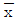
관리도보다 검출력이 좋다. - p관리도에서는 n과
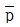
에 따라서 OC곡선은 변한다. - np관리도에서는
 에 따라서만 OC곡선을 변하게 한다.
에 따라서만 OC곡선을 변하게 한다.  관리도에서 검출력은 n이 10이 되었을 때 가장 좋아진다.
관리도에서 검출력은 n이 10이 되었을 때 가장 좋아진다.
(정답률: 61%)
31. x에 대한 y의 회귀관계를 검정하기 위하여 x에 대한 y의 값을 20회 측정하여 다음의 데이터를 구했다. 이때. 회귀에 의한 변동의 값은 약 얼마인가?
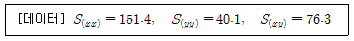
- 0.498
- 1.65
- 10.25
- 38.45
(정답률: 66%)
32. 확률변수의 확률분포에 관한 설명으로 옳지 않은 것은?
- ?2분포를 하는 n개의 확률변수의 합은 ?2분포를 한다.
- t 분포를 하는 확률변수를 제곱한 확률변수는 ?2분포를 한다.
- 정규분포를 하는 서로 독립된 n개의 확률변수의 합은 정규분포를 한다.
- 포아송 분포를 하는 서로 독립된 n개의 확률변수의 합은 포아송 분포를 한다.
(정답률: 60%)
33. 계량형 샘플링 검사에 관한 설명으로 가장 적절한 것은?
- 품질특성의 측정이 상대적으로 간편하다.
- 한 가지 샘플링 검사만으로 제품의 모든 품질특성에 관한 판정을 내릴 수 있다.
- 샘플링 검사기록이 앞으로의 품질문제 해석에 상대적으로 큰 도움이 되지 못한다.
- 검사를 위해 추출된 샘플에 부적합품이 전혀 포함되어 있지 않더라도 로트가 불합격될 수 있다.
(정답률: 63%)
34. 직물공장의 공정에서 실이 끊어지는 횟수는 10,000m당 평균 16회이었다. 원인을 조사하고, 기계의 일부를 개량하여 운전하였더니 실이 끊어지는 횟수는 10,000m당 9회이었다. 개량한 기계에 의한 실이 끊어지는 횟수가 감소하였다고 할 수 있는지 유의수준 0.⑤로 검정한 결과로 옳은 것은?
- H0 채택, 즉 감소했다고 할 수 없다.
- H0 기각, 즉 감소했다고 할 수 있다.
- H0 채택, 즉 달라졌다고 할 수 없다.
- H0 기각, 즉 증가했다고 할 수 있다.
(정답률: 59%)
35. 다음 중 계량치 데이터가 아닌 것은?
- KTX 일일 수입금액
- 냉장고의 평균수명
- 철강제품의 인장강도
- 컴퓨터 부품의 부적합품수
(정답률: 67%)
36. 정규분포를 하는 모집단으로부터 4개의 시료를 선택하여 특성치를 측정하였더니 1.14, 1.15, 1.16, 1.11이었다. 만약 이 정규분포의 표준편차(σ)가 0.01이라면 모집단의 평균에 대한 가설을 H0:μ=1.16, H1:μ≠1.16으로 하여 검정할 때 결론으로 옳은 것은?
- 유의수준(α)이 0.01이면 귀무가설을 채택한다.
- 유의수준(α)이 0.01이면 대립가설을 채택한다.
- 유의수준(α)이 0.⑤이면 귀무가설을 채택한다.
- 문제에서 주어진 데이터로는 검정이 불가능하다.
(정답률: 55%)
37.
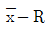
관리도의 운용에서 관리도는 아무 이상이 없으나 R관리도의 타점이 관리한계선 밖으로 벗어났다. 다음 중 가장 적절한 판정은?- 공정산포에 변화가 일어났을 가능성이 높다.
- 공정평균에 변화가 일어났을 가능성이 높다.
- 공정평균와 공정산포에 변화가 일어났을 가능성이 높다.
 관리도는 이상이 없으므로 공정의 변화가 발생하지 않은 것으로 간주할 수 있다.
관리도는 이상이 없으므로 공정의 변화가 발생하지 않은 것으로 간주할 수 있다.
(정답률: 58%)
38. 다음 중 누적합 관리도에 관한 설명으로 옳지 않은 것은?
- 슈하르트의 ±3σ 관리도와는 별도로 데이터의 누적합에 근거한 관리도이다.
- 누적합 관리도는 공정의 변화가 서서히 일어나고 있을 때 빨리 감지할 수 있는 장점이 있다.
- 시료군에서 시료를 주기적으로 추출하여 그 평균값과 공정목표치와의 합을 누적합하여 그래프로 그린다.
- V마스크에서 찍힌 시료군의 점이 하나라도 V마스크에 가려져 있으면 공정에 변화가 일어났다고 판단한다.
(정답률: 50%)
39. 어떤 제품의 한 로트는 100개의 상자로 구성되며 각 상자는 10개의 제품을 담고 있다. 이 제품의 특성을 조사하기 위하여 로트로부터 10개의 상자를 랜덤하게 뽑고, 뽑은 상자들을 전수검사하였다. 이러한 샘플링을 무엇이라고 하는가?
- 취락 샘플링(Cluster Sampling)
- 계통 샘플링(Systematic Sampling)
- 층별 샘플링(Stratified Sampling)
- 2단계 샘플링(Two Stage Sampling)
(정답률: 76%)
40. 다음 중 관리도를 사용하는 목적으로 가장 거리가 먼 것은?
- 공정의 평균과 분산 등 모수를 추정할 수 있다.
- 제조공정에 이상원인이 발생하는 것을 탐지한다.
- 현재 공정의 상태를 해석하고, 공정을 관리할 때 사용한다.
- 공정이 관리상태일 경우 발생되는 불가피한 변동원인인 우연원인을 탐지한다.
(정답률: 58%)
3과목: 생산시스템
41. 그림은 네트워크로 표현된 프로젝트에서 정규방법에 의해 행할 때와 긴급방법에 의해 행할때 활동의 소요시간과 비용구배(기울기)를 나타낸 것이다. 정규방법에 의해 프로젝트를 행할 경우의 총비용이 920만원이라면 프로젝트를 최소의 비용으로 11일에 완료하고자 할 경우 발생하는 총비용은 얼마인가? (단, 각 활동에 표시된 값 a：b(c)에서 a는 정규작업시간, b는 긴급작업시간, c는 1일 단축비용(비용구배)을 의미한다. 예를 들어, 활동 (②, ⑤의 정규작업시간은 6, 긴급작업시간은 5, 비용구배는 60만원이다.)
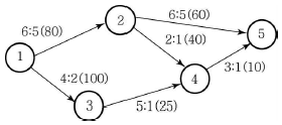
- 930만원
- 980만원
- 990만원
- 1,010만원
(정답률: 50%)
42. 동작경제의 원칙 중 신체 사용에 관한 원칙으로 옳은 것은?
- 두 팔의 동작은 동시에 같은 방향으로 움직인다.
- 두 손의 동작은 같이 시작하고 같이 끝나도록 한다.
- 손 동작은 급격히 방향을 바꾸어 직선으로 움직인다.
- 근무시간 중 휴식이 필요한 때에는 한 손만 사용한다.
(정답률: 78%)
43. 애로공정에 대한 설명으로 가장 거리가 먼 것은?
- 상대적으로 더디게 진행되는 공정이다.
- 애로공정은 전체 공정의 능력과는 무관하다.
- 공정능력이 부하량을 소화하지 못하여 발생한다.
- 애로공정이 있을 경우 전체 공정의 능력은 애로공정의 생산속도에 좌우된다.
(정답률: 85%)
44. MRP에서 부품전개를 위해 사용되는 양식에 쓰이는 용어에 관한 설명으로 옳지 않은 것은?
- 계획수취량은 초기에 보충되어야 할 계획된 주문량을 말한다.
- 예정수취량은 주문은 했으나 아직 도착하지 않은 주문량을 말한다.
- 순소요량은 총수요량에서 현재고량을 뺀 후 예정수취량을 더한 것이다.
- 발주계획량은 구매주문으로 발령하는 수량으로 계획수취량과 동일하다.
(정답률: 75%)
45. 설비 선정시 주문생산에서와 같이 제품별 생산량이 적고 제품설계의 변동이 심할 경우 어떤 기계설비의 설치가 유리한가?
- SLP
- 범용기계
- MAPI
- 전용기계
(정답률: 81%)
46. 기업의 생산조직에서 작업을 전문화하기 위하여 테일러가 제시한 조직형태는?
- 라인 조직
- 기능식 조직
- 스텝조직
- 사업부 조직
(정답률: 76%)
47. 예측시스템의 평가기준으로 가장 거리가 먼 것은?
- 예측의 정확성
- 예측의 적시성
- 예측의 간편성
- 예측의 통제성
(정답률: 68%)
48. 다음 중 예방보전의 효과로 볼 수 없는 것은?
- 설비투자 증대
- 납기지연 감소
- 제조원가 절감
- 유휴손실 감소
(정답률: 64%)
49. 보전비를 감소하기 위한 조치로 가장 거리가 먼 것은?
- 보전계획의 수립
- 보전담당자의 교육훈련
- 외주업자의 적절한 이용
- 보전작업의 계획적 이용
(정답률: 55%)
50. 작업자공정분석에 관한 설명으로 옳지 않은 것은?
- 기계와 작업자 공정의 관계를 분석하는 데 편리하다.
- 제품과 부품이 갖는 제 요소의 개선 및 설계에 대한 분석이다.
- 창고, 보전계 등의 업무 범위와 경로 등의 개선에 적용된다.
- 이동하면서 작업하는 작업자의 작업점, 작업순서, 작업동작 개선에 대한 분석이다.
(정답률: 73%)
51. GT(Group Technology)에 관한 설명으로 가장 거리가 먼 것은?
- 배치시에는 혼합형 배치를 주로 사용한다.
- 생산설비를 기계군이나 셀로 분류, 정돈한다.
- 설계상, 제조상 유사성으로 구분하여 부품군으로 집단화 한다.
- 소품종 대량생산시스템에서 생산능률을 향상시키기 위한 방법이다.
(정답률: 74%)
52. 다음 중 분산구매의 장점이 아닌 것은?
- 자주적 구매가 가능하다.
- 긴급수요의 경우 유리하다.
- 가격이나 거래조건이 유리하다.
- 구매수속이 간단하여 신속하게 치리할 수 있다.
(정답률: 77%)
53. 총괄생산계획(APP)전략 중 수요가 줄면 고용인원을 해고하고, 수요가 증가하면 다시 채용함으로써 수요변동에 대응하는 전략은?
- 가동률의 조정
- 재고수준의 조정
- 기회손실의 조정
- 고용수준의 변동
(정답률: 79%)
54. 작업자의 페이스를 정상작업 페이스와 비교ㆍ판단하여 관측평균 시간치를 보정해주는 과정을 일컫는 용어는?
- 워킹(Working)
- 사이클(Cycle)
- 레이팅(Rating)
- 표준 페이스(Standard Pace)
(정답률: 82%)
55. JIT 시스템에서 생산준비시간의 단축에 관한 설명으로 옳지 않은 것은?
- 기능적 공구의 채택으로 작업시간을 단축시킨다.
- 조정위치를 정확하게 설정하여 조정작업시간을 단축시킨다.
- 내적 작업준비를 가급적 지양하고 가능한 외적 작업준비로 바꾼다.
- 외적 작업준비는 기계가동을 중지하여 작업준비를 하는 경우이다.
(정답률: 65%)
56. 부분품 가공이나 제품조립에 필요한 자재가 적기에 조달되고 이들을 생산에 지정된 시간까지 완성될 수 있도록 기계 내지 작업을 시간적으로 배정하고 일시를 결정하여 생산일정을 계획하는 행위를 무엇이라 하는가?
- 공수계획
- 공정계획
- 진도계획
- 일정계획
(정답률: 82%)
57. 단일기계에 의하여 n개의 작업을 처리할 경우의 일정계획에 관한 설명으로 옳지 않은 것은?
- 평균 납기 지체일을 최소화하기 위해서는 Johnson의 법칙을 사용한다.
- 최대 납기 지체일을 최소화하기 위해서는 납기일이 빠른 순으로 작업순서를 결정한다.
- 긴급률(Critical Ratio)이 작은 순으로 배정하면 대체로 평균 납기 지체일을 줄일 수 있다.
- 평균흐름시간(Average Fiow Time)을 최소화하기 위해서는 최단작업시간 우선법칙을 사용한다.
(정답률: 70%)
58. C자동차 회사는 자기 회사의 가장 인기있는 덤프트럭 시리즈를 위해 바퀴를 매년 48,000개 사용한다. 이 회사는 바퀴를 자체 생산하는 데 하루 800개의 비율로 생산할 수 있으며, 트럭은 연중 일정한 비율로 조립된다. 재고유지 비용은 1년에 한 단위당 1원이며, 바퀴 생산을 위한 준비비용은 45원이다. 이때 경제적 생산량(EPQ)은 약 얼마인가? (단, 이 회사는 1년에 240일 가동하며, 1일 사용률(수요률)로 계산하기로 한다.)
- 2,000개
- 2,200개
- 2,400개
- 2,600개
(정답률: 60%)
59. 다음 중 작업분석에 이용되는 도표가 아닌 것은?
- 유통공정도표(Flow Process Chart)
- 다중활동분석도표(Multiple Activity Chart)
- 복수작업자분석도표(Gang Process Chart)
- 작업자－기계 작업분석도표(Man－Machine Chart)
(정답률: 74%)
60. 다음 중 워크샘플링의 관측요령을 가장 적절하게 표현한 것은?
- 직접 및 연속 관측
- 간접 및 연속 관측
- 랜덤한 시점에서 순간 관측
- 정기적인 시점에서 순간 관측
(정답률: 84%)
4과목: 신뢰성관리
61. 그림과 같은 형태의 시스템에서 100시간 사용 후 시스템의 신뢰도는 약 얼마인가? (단, A의 평균고장률은 0.002/시간, B의 평균고장률은 0.001/시간이다.)
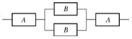
- 0.50
- 0.66
- 0.80
- 0.98
(정답률: 47%)
62. 3 중 2 중복시스템에서 부품이 모두 고장률 λ인 지수분포를 따른다면, 시간 t에서 이 시스템의 신뢰도는?
- e2λt(1+2eλt)
- e-2λt(3+2eλt)
- e-λt(3+2e-2λt)
- e-2λt(3-2e-λt)
(정답률: 62%)
63. 그림과 같은 고장목(Fault Tree)에서 정상사상의 발생 확률은 약 얼마인가? (단, 모든 사상의 발생확률은 0.1이다.)
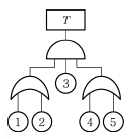
- 0.0036
- 0.0324
- 0.0987
- 0.8821
(정답률: 68%)
64. 소시료 신뢰성 실험에서 평균순위법의 고장률 함수로 바르게 표현한 것은? (단, n은 시료의 수, i는 고장순번, ti는 i번째 고장 발생시간이다.)
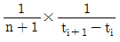
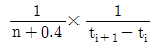
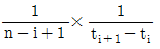
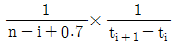
(정답률: 66%)
65. 5개의 부품이 직렬로 이루어진 시스템의 MTTF가 104시간 이상이 되려면 각 부품의 고장률은 얼마 이하이어야 하는가? (단, 모든 부품의 고장률은 동일하며 지수분포를 따른다.)
- 5×104hr
- 5×10-4hr
- 1/5×104hr
- 1/5×10-4hr
(정답률: 53%)
66. 고장에 관한 설명으로 옳지 않은 것은?
- 고장해석방법에는 FMEA, FTA 등이 있다.
- 고장해석이란 고장의 인과관계를 명확히 하는 것이다.
- 제품을 소형화, 고밀도화하면 중량도 작아지고 고장 수도 적어진다.
- 간섭이론에서는 스트레스와 강도의 평균 및 산포에 대한 시간적 변화를 고려하여 고장확률을 구한다.
(정답률: 81%)
67. 어떤 아이템의 수리시간은 지수분포를 따른다고 한다. 이 아이템의 수리시간을 n번 관측하여 x1, …, xn의 데이터를 얻었다. 평균수리시간(MTTR)의 추정치로 적당한 것은?
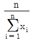
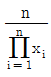
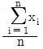
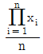
(정답률: 66%)
68. 정상사용온도 20℃인 전자부품 10개를 가속온도 60℃에서 3개가 고장 날 때까지 가속수명 시험을 하였더니 63, 112, 280시간에 각각 1개씩 고장이 발생하였다. 10℃법칙에서 따라 정상사용온도에서의 평균수명을 구하면 얼마인가? (단, 가속계수는 24이다.)
- 8⑤시간
- 3,220시간
- 6,440시간
- 12,880시간
(정답률: 66%)
69. 신뢰성 배분(Reliability Allocation)의 목적을 설명한 것으로 가장 적절한 것은?
- 아이템의 신뢰성을 보증하고 계약요구사항을 만족시키기 위하여 시험한다.
- 전체 시스템에 요구되는 신뢰도 목표값을 서브시스템이나 더 낮은 수준의 아이템의 신뢰도 목표값으로 배정하기 위하여 시험한다.
- 아이템의 개발과정에서 설계에 미친 내환경성 잠재적 약점과 예상하지 못한 상호작용을 평가하여 개발위험을 감소하기 위하여 시험한다.
- 신뢰성예측, 시험방법개발 등 기술적 정보를 수집하거나 고장 매커니즘의 조사 및 고장의 재현 사고대책수립 및 유효성 확인을 위해 시험한다.
(정답률: 60%)
70. 샘플 500개에 대한 수명시험 결과 50시간과 60시간 사이에서 50개가 고장이 났다. 그리고 이 구간 초의 생존개수는 350개이다. 이 구간에서 고장률의 값은 약 얼마인가?
- 0.0143/시간
- 0.0285/시간
- 0.1429/시간
- 0.2856/시간
(정답률: 52%)
71. 어떤 기기의 수명이 평균 500시간, 표준편차 50시간인 정규분포를 따른다. 이 제품을 400시간 사용하였을 때의 신뢰도는 약 얼마인가? (단, u0.9938=2.5, u0.9772=2.0, u0.9932=1.5, u0.8413-1.0이다.)
- 0.8413
- 0.9332
- 0.9772
- 0.9938
(정답률: 72%)
72. 2개의 부품 중 어느 하나만 작동하면 장치가 작동되는 경우, 장치의 신뢰도를 0.96 이상 되게 하려면 각 부품의 신뢰도는 최소 얼마 이상이 되어야 하는가? (단, 각 부품의 신뢰도는 동일하다.)
- 0.76
- 0.80
- 0.85
- 0.90
(정답률: 67%)
73. 다음 중 지수분포 f(t)=λe-λt의 분산으로 옳은 것은?
- 1/λ
- 1/2λ
- 2/λ
- 1/λ2
(정답률: 60%)
74. 와이블 확률지에 관한 설명으로 가장 적절한 것은?
- 관측 중단 데이터가 있으면 사용할 수 없다.
- 분포의 모수를 확률지로부터 추정할 수 있다.
- 와이블 분포는 타점 후 반드시 원점을 지나는 직선이 나오게 된다.
- H(t)를 누적고장률함수라고 할 때 H(t)가 (t)의 선형함수임을 이용한 것이다.
(정답률: 48%)
75. 계량 1회 샘플링 검사(DOD－HDBK H108)에서 샘플수와 총시험 시간이 주어지고, 총시험시간까지 시험하여 발생한 고장개수가 합격판정개수보다 적을 경우 로트를 합격하는 시험방법은?
- 현지시험
- 정수중단시험
- 강제열화시험
- 정시중단시험
(정답률: 66%)
76. 수리하여 가면서 가용할 수 있는 기기의 신뢰도 함수는 평균고장률(λ) 0.01/시간인 지수분포에 따르며, 보전도 함수는 평균수리율(μ) 0.1/시간인 지수분포에 따른다고 할 때 이 기기의 가용도(Availability)는 약 얼마인가?
- 0.09
- 0.10
- 0.91
- 1.00
(정답률: 77%)
77. 지수분포의 수명을 갖는 부품 n개를 시험하여 고장개수가 r개가 되었을 때 관측을 중단하였다. 총시험시간(T)을
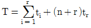
이라고 할 때, 평균수명시간의 양쪽신뢰구간을 바르게 표현한 것은?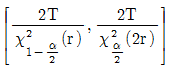
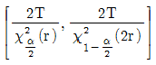
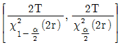
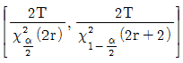
(정답률: 67%)
78. 다음 중 시스템 수명곡선인 욕조곡선의 초기고장기간에 발생하는 고장의 원인에 해당되지 않는 것은?
- 불충분한 정비
- 조립상의 과오
- 빈약한 제조기술
- 표준 이하의 재료를 사용
(정답률: 66%)
79. 제품의 제조단계에서 고유신뢰도를 증대시키기 위한 방법으로 가장 거리가 먼 것은?
- 제품의 단순화
- 제조기술의 향상
- 제조공정의 자동화
- 제조품질의 통계적 관리
(정답률: 49%)
80. 아이템의 모든 서브 아이템에 존재할 수 있는 결함 모드에 대한 조사와 다른 서브 아이템 및 아이템의 요구 기능에 대한 각 결함 모드의 영향을 확인하는 정성적 신뢰성 분석방법은?
- FTA
- FMEA
- FMECA
- Fail Safe
(정답률: 60%)
5과목: 품질경영
81. 특성요인도 작성시 가장 먼저 하여야 할 사항은?
- 요인을 정한다.
- 품질특성을 정한다.
- 목적, 효과, 작성자, 시기 등을 기입한다.
- 큰 가지가 되는 화살표를 왼쪽에서 오른쪽을 긋는다.
(정답률: 76%)
82. Cp와 Cpk의 관계에 관한 설명으로 옳지 않은 것은?
- Cp와 Cpk의 관계는 언제나 Cp ≤ Cpk이다.
- 공정중심의 규격중심에 일치하고 있을 때 Cp=Cpk이다.
- Cpk＜Cp일 때 공정평균은 규격중심과 일치하지 않는다.
- Cp값은 공정평균의 위치를 고려하지 않지만 Cpk는 고려한다.
(정답률: 75%)
83. 다음 중 SI 기본단위에 해당하는 것은?
- mol
- Hz
- ℃
- bar
(정답률: 75%)
84. 품질에 대해서 사용자의 만족감을 표현하는 주관적 측면과 요구조건과의 일치성을 표현하는 객관적 측면을 함께 고려한 품질의 이원적 인식방법에 관한 설명으로 옳지 않은 것은?
- 역품질요소：품질에 대해 충족되든 충족되지 않든 만족도 불만도 없음
- 일원적 품질요소：품질에 대해 충족이 되면 만족, 충족되지 않으면 불만
- 매력적 품질요소：품질에 대해 충족이 되면 만족을 주지만 충족되지 않더라도 무방
- 당연적 품질요소：품질에 대해 충족이 되면 당연하게 여기고 충족되지 않으면 불만
(정답률: 72%)
85. 다음 중 실패코스트에 해당되는 것은?
- 검사시험 코스트
- 교육훈련 코스트
- 재손실에 소요되는 코스트
- 치공구의 정도 유지 코스트
(정답률: 82%)
86. 가빈(D. A. Garvin)교수가 제시한 것으로서 품질의 전략적 분석을 위한 프레임으로 활용할 수 있는 품질요소에 포함되지 않는 것은?
- 성능(Performance)
- 내구성(Durability)
- 심미성(Aesthetics)
- 커뮤니케이션(Communication)
(정답률: 66%)
87. 신 QC 7가지 수법의 하나인 매트릭스도법(Matrix Diagram)에 관한 설명으로 가장 거리가 먼 것은?
- 열과 행에 배치된 요소 간의 관계를 나타낸다.
- 이원적인 관계 가운데서 문제 해결에 착상을 얻는다.
- 여러 요인 간에 존재하는 관계의 정도를 수량화하는 데 이용된다.
- 일련의 요소를 행과 열에 나열하고, 그 교점에 상호관계의 유무나 관련을 파악하여 문제해결의 착안점을 얻는 방법이다.
(정답률: 64%)
88. 부품 A는 N(2.5, 0.032), 부품 B는 N(2.4, 0.022), 부품 C는 N(2.4,, 0.042) 부품 D는 N(3.0, 0.012)인 정규분포에 따른다. 이 4개 부품이 직렬로 결합되는 경우 조립품의 표준편차는 약 얼마인가?(단, 부품 A, B, C, D는 서로 독립이다.)
- 0.003
- 0.⑤5
- 0.1
- 0.316
(정답률: 74%)
89. 제조물책임법에서 규정한 제조업자의 손해배상책임 면책사유가 적용되는 경우가 아닌 것은?
- 제조업자가 당해 제조물을 공급하지 아니한 사실을 입증한 경우
- 제조업자가 당해 제조물을 공급한 때의 과학기술수준으로는 결함의 존재를 발견할 수 없었다는 사실을 입증한 경우
- 제조업자가 당해 제조물에 사용한 원재료 또는 부품이 법령이 정하는 기준을 준수하지 않음으로써 제조물의 결함이 발생한 사실을 입증한 경우
- 원재료 또는 부품의 경우에는 당해 원재료 또는 부품을 사용한 제조물 제조업자의 설계 및 제작에 관한 지시로 인하여 결함이 발생하였다는 사실을 입증한 경우
(정답률: 66%)
90. 생산공정에 투입될 4M(Man, Material, Machine, Method)에 대한 작업상의 준비사항에 해당되지 않는 것은?
- 노하우와 창의적인 아이디어를 위하여 모든 작업을 규격화하고 표준화한다.
- 필요한 기능이나 지식을 갖는 사람을 확보하고 교육과 훈련을 실시하여 사람의 적정배치를 도모하여야 한다.
- 설계의 품질에 적합한 원재료나 부품을 원자재 규격이나 부품규격으로 정리하고 원활하게 조달될 수 있도록 준비한다.
- 품질표준을 충족시킬 수 있는 정도(精度)라든가 능력을 갖춘 설비, 기계, 검사용구를 선정하여 생산에 쓸 수 있도록 준비한다.
(정답률: 81%)
91. 품질관리를 도입하고 추진하는 데 있어서 일반적으로 품질관리위원회나 TQM추진위원회 외에 품질관리부문을 설치한다. 품질관리부문의 역할에 해당되지 않는 것은?
- 품질관리에 대한 교육
- 품질관리추진 프로그램 결정
- 품질관리계획의 입안 또는 그것에 대한 보좌
- 품질관리에 관련되는 규정이나 표준류의 관리
(정답률: 65%)
92. 허츠버그(Frederick Herzberg)의 동기부여－위생이론에서 만족(동기)요인에 해당하지 않는 것은?
- 인정
- 성취감
- 임금, 보수
- 성장, 자기실현
(정답률: 70%)
93. 회사 내에서 사내표준화의 역할로 옳지 않은 것은?
- 기술의 보존, 보편화, 향상
- 책임, 권한의 집중화와 업무의 합리화
- 업무의 효율화 또는 교육훈련의 용이성
- 경영방침의 구체적인 지시와 그것의 수행
(정답률: 68%)
94. 브레인스토밍(Brain Storming)의 4가지 원칙에 해당되는 것은?
- 발언을 비판한다.
- 남의 아이디어에 편승한다.
- 발언의 범위를 명확히 한다.
- 발언은 논리적이고 합리적이어야 한다.
(정답률: 68%)
95. 표준을 적용기간에 따라 분류할 때 “시한표준”에 관한 설명으로 옳은 것은?
- 일반적인 표준은 모두 이것에 속하며 적용개시의 시기만 명시한 것이다.
- 어떤 표준을 기획할 때 잠정적임을 전제로 하며 잠정적으로 관리하기 위해 작성한 것이다.
- 특정 활동을 추진함을 목적으로 하며, 적용의 개시시기 및 종료기한을 명시한 표준이다.
- 정식표준을 제정하기에는 아직 조건이 갖추어져 있지 않지만 방치하면 혼란이 예상되는 경우 작성한다.
(정답률: 80%)
96. 말콤 볼드리지상에 관한 설명으로 옳지 않은 것은?
- 3개 요소 7개 범주로 구분하고 있다.
- 데밍상을 벤치마킹하여 제정한 것이다.
- 기업경영 전체의 프로그램으로 전략에서 실행까지를 전개한다.
- 품질향상을 위해 실천적인 “How to do”를 추구하는 프로세스 지향형이다.
(정답률: 78%)
97. “제품”이라는 용어는 활동 또는 공정의 결과로서 유형 또는 무형이거나 혹은 이들의 조합일 수 있다. 품질경영시스템－기본사항 및 용어(KS Q ISO 9000：2007)에서 일반적인 제품 범주를 분류하는 기준에 해당되지 않는 것은?
- 서비스(Service)
- 소프트웨어(Software)
- 하드웨어(Hardware)
- 원재료(Raw material)
(정답률: 88%)
98. 데이터의 품질코스트 중 예방코스트 (P－Cost)를 계산하여 파이겐바움의 품질코스트 기준에 의하여 분석한 결과로 옳은 것은?
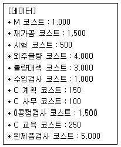
- 예방코스트의 비율이 약 3%로 낮다.
- 예방코스트의 비율이 약 5%로 높다.
- 예방코스트의 비율이 약 3%로 적당하다.
- 예방코스트의 비율이 약 5%로 적당하다.
(정답률: 56%)
99. 품질경영시스템－기본사항 및 용어(KS Q ISO 9000：2007)에서 규정하고 있는 품질의 정의 를 가장 적절히 표현한 것은?
- 생산과정에서 제조된 제품이 설계품질에 어느 정도 적합되었는가를 말한다.
- 소비자가 제품을 사용할 때 그 제품에서 원하는 바가 얼마나 만족되는가를 말하는 것이다.
- 제품을 생산하기 위한 제품의 시방, 성능, 외관 등을 규정지어 주는 제품규격을 말한다.
- 고유 특성의 집합이 명시적인 요구 또는 기대, 일반적으로 묵시적이거나 의무적인 요구 또는 기대를 충족시키는 정도를 말한다.
(정답률: 57%)
100. 측정시스템이 통계적 특성을 적절히 유지하고 있는지를 평가하는 방법인 게이지(Gage)R&R(Repeatability & Reproducibility) 테스트에 관한 설명으로 옳지 않은 것은?
- 직선성(Linearity)은 특정 계측기로 동일 제품을 측정하였을 때 측정범위 내에서 측정된 평균값을 의미한다.
- 재현성(Repeatability)은 동일 계측기로 동일 제품을 여러 작업자가 측정하였을 때 나타나는 결과의 차이를 의미한다.
- 편의(Bias)는 특정 계측기로 동일 제품을 측정했을 때 얻어지는 측정값의 평균과 이 특성의 참값과의 차이를 의미한다.
- 정밀도(Precision)는 동일 작업자가 동일 측정기를 가지고 동일 제품을 측정하였을 때 파생되는 측정의 변동을 의미한다.
(정답률: 60%)
이제, 유의수준 5%에서의 F분포표를 참조하여, 자유도 4와 995인 경우의 F0.95값을 구한다. 이 값은 약 2.45이다.
따라서, F0 = 24 > F0.95 = 2.45 이므로, 귀무가설 "기계 간의 부적합품률에 차이가 없다"를 기각하고, 대립가설 "기계 간의 부적합품률에 차이가 있다"를 채택한다. 따라서, 옳은 판정기준은 "F0＞F0.95이므로 5%의 위험률로 기계 간의 부적합품률의 차가 있다고 할 수 있다." 이다.